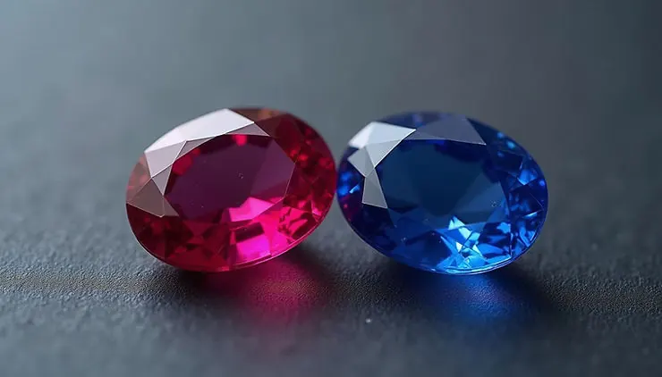

鴿血紅：顏色之外的產地與螢光秘密
鴿血紅不是一種顏色，而是一組條件的總和——鉻、產地、螢光與實驗室的判定標準，缺一不可。


核心定義
「鴿血紅」（pigeon blood red）是紅寶石色彩的最高形容詞，源自緬甸：據說當地人拿紅寶石與鴿子眼睛的顏色比對，鮮豔到「像鴿血」者即為極品。現代商業與鑑定體系中，這個詞已被實驗室化——GIA 等機構在證書上若標示 pigeon blood，代表顏色飽和度、色調與螢光表現都達到嚴格門檻。
鴿血紅的科學核心是鉻（chromium）：紅寶石是含鉻的剛玉（Al₂O₃），鉻取代晶格中的鋁後，吸收黃綠段光、讓寶石呈現紅色。鉻含量越高、聚集方式越佳，紅色越濃豔——但若鉻過多，顏色反而發暗。真正的鴿血紅，是「鉻剛好到位」的傑作。
特徵與分類
| 要素 | 鴿血紅條件 | 說明 |
|---|---|---|
| 色相 | 純正紅色 | 不可偏粉、偏橙、偏褐 |
| 飽和度 | 高 | 濃而不暗、豔而不濁 |
| 色調 | 中到中深 | 太淺變粉、太深發黑 |
| 螢光 | 強（紅螢光） | 紫外光下更鮮豔的加分項 |
| 產地 | 緬甸為主（傳統） | 現代實驗室不限產地 |
關鍵轉折：過去「鴿血紅」幾乎是緬甸莫谷（Mogok）的代名詞，但近年 GIA 等機構已開放對其他產地（如莫三比克）給出 pigeon blood 評語——只要顏色與螢光達標。這讓「鴿血紅」從產地神話，回歸到「顏色科學」。
科學原理
紅寶石的紅色＝鉻的吸收：鉻離子讓剛玉吸收黃綠段與紫色段的光，穿透紅段，於是寶石呈現「紅」。緬甸紅寶的另一個秘密是螢光：在紫外光與日光下，鉻引起的紅螢光會「疊加」在體色上，讓顏色像內發光一樣鮮豔——這就是緬甸紅寶被形容為「絲絨感」的物理來源。
相較之下，泰國紅寶石含鐵較高，鐵會「滅螢光」，所以泰國紅寶顏色偏深偏暗、少了那層內發光。鉻與鐵的比例，決定了不同產地紅寶的「氣質」。
鑑定與鑑別方法
- 看證書評語欄：GIA 標 pigeon blood 才算數（商人口頭說的只供參考）
- 用紫外燈測螢光：強紅螢光是緬甸高品質紅寶的重要特徵
- 分光鏡看鉻吸收譜線，確認致色元素
- 顯微鏡找產地特徵內含物（莫谷的「絲絨」、水鋁礦針等）
- 區分處理：加熱與充填會改變外觀，證書必須揭露
市場行情與保養建議
行情上，鴿血紅紅寶石是彩色寶石的天花板：1 克拉以上、顏色達標的緬甸鴿血紅，單克拉價格可達數萬到數十萬美元等級；莫三比克鴿血紅相對親民但仍屬高端。顏色差一級，價格可差數倍——「pigeon blood」四個字，是行情的分水嶺。
購買提醒：鴿血紅沒有統一國際標準，不同實驗室判定寬嚴不同。比較價格時要對照「同一實驗室」的評語，並確認是否經加熱處理——無燒（unheated）的鴿血紅，價格可再翻數倍。
常見誤區
過去如此，現在不是。GIA 已將 pigeon blood 開放給符合顏色標準的非緬甸產地，莫三比克頂級紅寶也常獲此評。迷信產地，不如相信實驗室的顏色判定。
鴿血紅講究「紅得剛剛好」：飽和度高、色調不偏不倚、帶強螢光。深到發黑或紅得發暗，都不算。它是顏色科學的綜合判定，不是「紅」這個字。
冷知識
傳說中的比對物是鴿子眼睛（不是血），且各說各話。但這個詩意的名字，讓緬甸紅寶在國際市場有了難以撼動的品牌形象。
陽光中含紫外光，鉻的螢光被激發，讓緬甸紅寶在日光下特別鮮豔——陰天或鎢絲燈下就沒那麼紅。紅寶石的「天氣」，會影響它的美。
反直覺觀點
顏色超過最佳區間會發暗、發黑，反而跌價。鴿血紅的精髓是「豔而不暗」——過猶不及，在色彩學上是鐵律。
熱處理是紅寶石最普遍的工藝，加熱可以提色、去雜。無燒與有燒的鴿血紅外觀可能一樣美，但價格差數倍——燒與不燒，是市場最敏感的一條線。